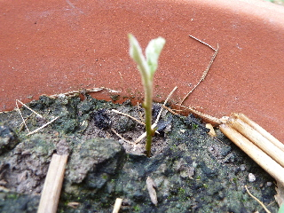
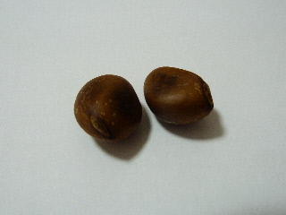
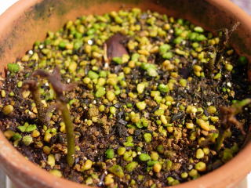
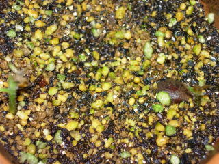
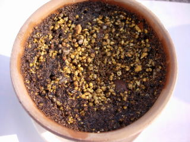

ビワの芽が出ました。
2012/07/28
種を蒔いてからずいぶんたちましたが、やっと芽がでました。

2月くらいたっていたので、正直あきらめていました。
なので、見つけた時はうれしかったです。
この暑い夏を乗り切って欲しいですね。
2012/07/28
種を蒔いてからずいぶんたちましたが、やっと芽がでました。

2月くらいたっていたので、正直あきらめていました。
なので、見つけた時はうれしかったです。
この暑い夏を乗り切って欲しいですね。
2012/06/17
少し小さ目のびわ「茂木びわ」の種です。

前回枯らしてしまっているので、今回は成功させたいです。
2010/07/17
梅雨で雨の日が多かったので、あんまり見てなかったら枯れちゃっていました。

気温が高かったり、日差しが強い日があったらからなんでしょうね。
次からは気をつけます。
2010/07/03
まだ出たばっかりで小さいです。

見え難いですが写真の右と左に1本ずつ芽がでました。
種を4個が5個蒔いたと思うので、もうちょっと出るかなと思っています。
2010/06/02
食べたビワの種を蒔きました。

ビワはちゃんと育って実も出来るんですよね。でも出来る実が小さかったりします。
でもこの種の実はサイズが大きかったので、ちょっと小さくてもいいサイズになると思うので、期待してます。
実生のビワは実が小さいんじゃなくて、普通の大きさです。